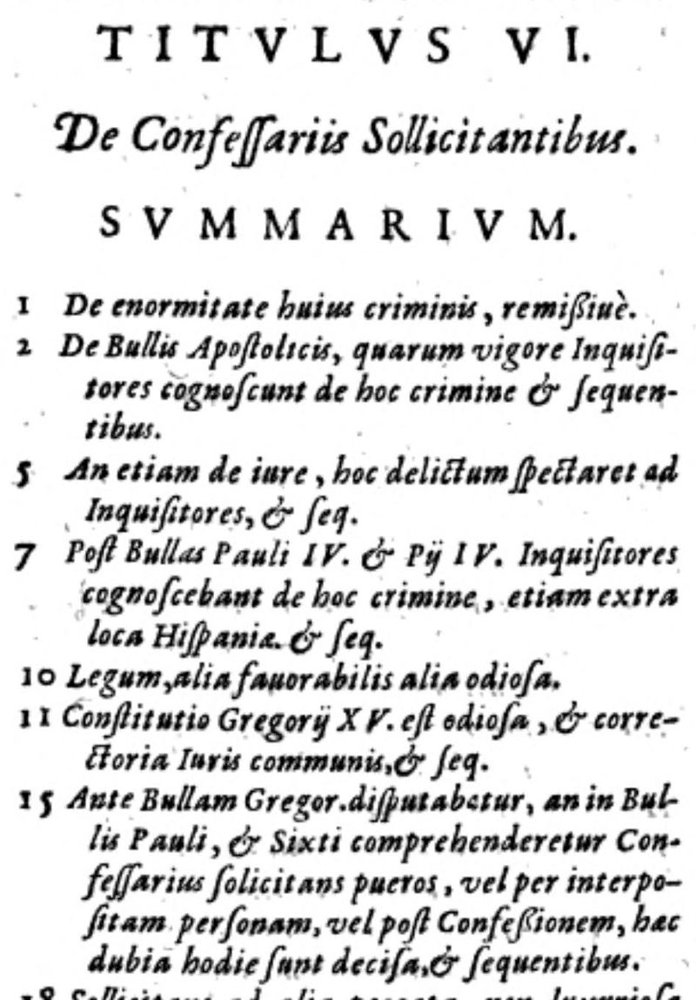

Title VI, “De Confessariis Sollicitantibus”: heading and summary (p. 135)
Latin: Lyon 1649, Part II, Title VI, p. 135, scan n170; the first items of the summary (numbers refer to Carena’s paragraphs). Highlighted: the bulls Lecky names.

Title VI. On Confessors who Solicit. Summary.
1 On the enormity of this crime (by reference).
2 On the apostolic bulls by virtue of which inquisitors take cognisance of this crime, and following.
5 Whether, even by law, this offence belonged to the inquisitors, and following.
7 After the bulls of Paul IV and Pius IV the inquisitors took cognisance of this crime even outside the territories of Spain, and following.
10 Of laws, some are favourable, some odious [to be construed narrowly].
11 The constitution of Gregory XV is odious, and corrective of the common law, and following.
15 Before the bull of Gregory it was disputed whether the bulls of Paul and of Sixtus covered a confessor who solicited boys, or through a go-between, or after confession; these doubts are now decided, and following.
Original Latin
Titulus VI. De Confessariis Sollicitantibus. Summarium.
1 De enormitate huius criminis, remissive.
2 De Bullis Apostolicis, quarum vigore Inquisitores cognoscunt de hoc crimine & sequentibus.
5 An etiam de iure, hoc delictum spectaret ad Inquisitores, & seq.
7 Post Bullas Pauli IV. & Pii IV. Inquisitores cognoscebant de hoc crimine, etiam extra loca Hispaniæ. & seq.
10 Legum, alia favorabilis alia odiosa.
11 Constitutio Gregorii XV. est odiosa, & correctoria Iuris communis, & seq.
15 Ante Bullam Gregor. disputabatur, an in Bullis Pauli, & Sixti comprehenderetur Confessarius solicitans pueros, vel per interpositam personam, vel post Confessionem, hæc dubia hodie sunt decisa, & sequentibus.
Lecky (vol. II, ch. V, note 12): “See, for example, the full discussion of the matter in Carena, De Officio S. Inquisitionis (Lugduni, 1649), pp. 135–161. Three popes — Paul IV., Pius IV., and Gregory XV. — found it necessary to issue bulls on the subject”. The page range is exact. Item 15 also refers to bulls “of Paul and of Sixtus”; which Sixtus is not stated on this page.
Further down the rabbit hole
Sources that Lecky cites in the notes next to the ones that cite this page.
- Sarpi, Historia dell’origine, forma, leggi ed uso dell’ufficio dell’InquisizioneA Venetian friar on how churchmen changed their tune about princes
- Llorente, Histoire critique de l’Inquisition d’EspagneHow many did the Spanish Inquisition burn? Its former secretary counts
- Paramo, De origine et progressu officii sanctae inquisitionisWhy the dead are tried for heresy
- Mignet, Antonio Perez et Philippe II“I would cut off God the Father’s nose”: how the Inquisition caught a king’s fallen secretary
- An Homily against Disobedience and Wilful RebellionHell as the prison of rebels: the Church of England preaches obedience
- Aquinas, Summa theologiae, II-IIHeretics and forgers; the usurper’s subjects


Backlinks
Every place in Rationalism in Europe that links to this page (generated automatically when the site is built).
- Chapter V: note 12